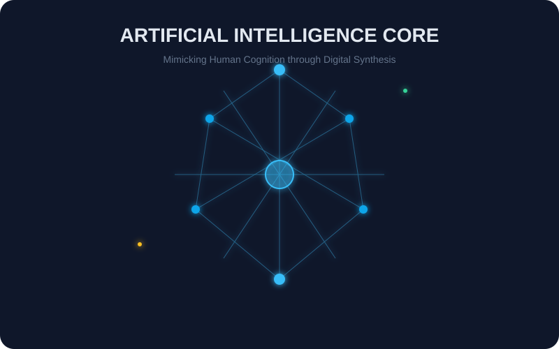
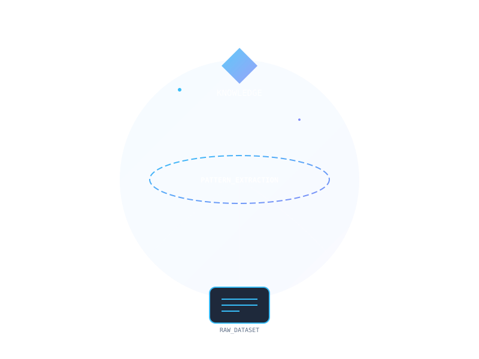
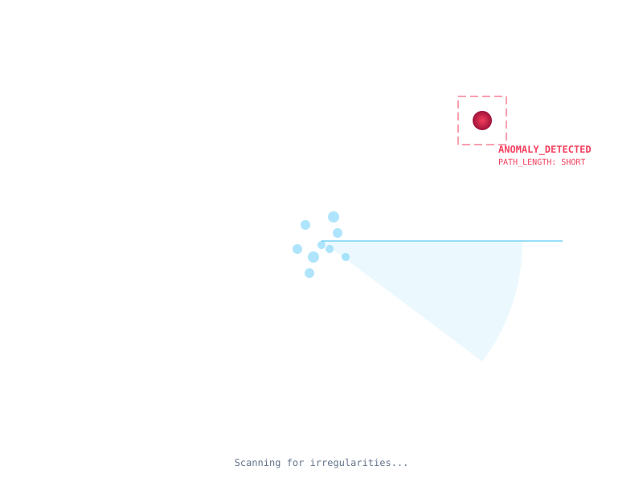
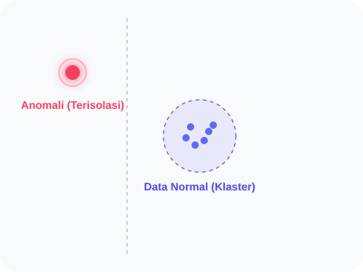
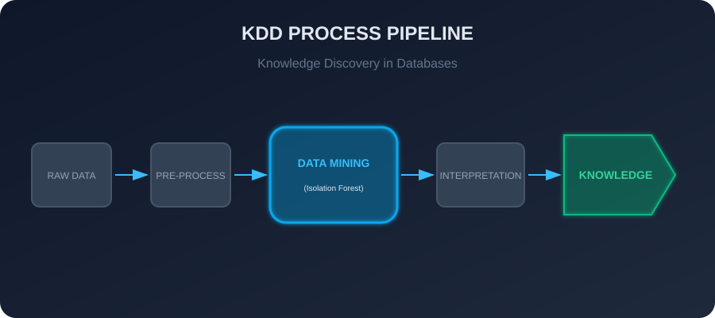
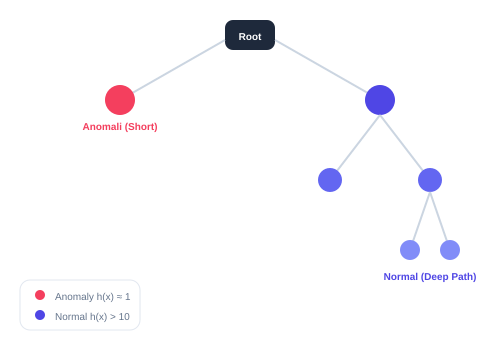
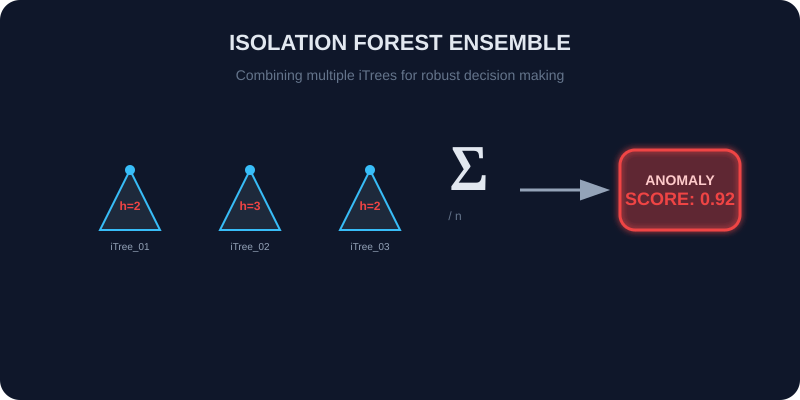

Artificial
Intelligence
Apa itu AI? (Kecerdasan Buatan)
AI adalah entitas sains yang bertujuan membangun mesin cerdas yang mampu mensimulasikan kognisi manusia. Ini bukan sekadar program kaku, melainkan sistem yang mampu mengolah informasi untuk melakukan Reasoning (Penalaran) dan Problem Solving secara otonom.
Apa itu Machine Learning? (ML)
ML adalah sub-bidang AI yang memberikan mesin kemampuan untuk "belajar" dari data tanpa diprogram secara eksplisit. ML menggunakan metode statistik untuk memungkinkan algoritma menemukan pola dan melakukan prediksi berdasarkan pengalaman masa lalu.


0.2.1: Data Mining (Ekstraksi Pengetahuan)
Data Mining adalah disiplin ilmu yang menggabungkan statistik, AI, dan manajemen database untuk mengekstraksi informasi non-trivial dari dataset raksasa. Tujuannya adalah mengubah data mentah menjadi Actionable Knowledge melalui proses pola penemuan (Pattern Discovery).

0.2.2: Anomaly Detection (Identifikasi Penyimpangan)
Anomaly Detection adalah teknik untuk mengidentifikasi observasi yang tidak sesuai dengan perilaku mayoritas data. Dalam terminologi AI, anomali dianggap sebagai "data yang dihasilkan oleh proses yang berbeda" dari proses penghasil data normal.
Anomaly Detection
(Isolation Forest)
A. APA itu Isolation Forest?
"Sebuah algoritma berbasis pohon yang secara eksplisit mengisolasi anomali menggunakan struktur biner acak."
Ini adalah metode Unsupervised Learning yang tidak membangun model "data normal", melainkan mencari "seberapa mudah sebuah data dipisahkan".
B. MENGAPA menggunakannya?
Metode tradisional (seperti KNN atau SVM) sangat "berat" secara komputasi dan sering gagal pada data berdimensi tinggi. Isolation Forest dipilih karena kecepatannya (kompleksitas linier) dan ketangguhannya terhadap dataset raksasa (Big Data).
C. BAGAIMANA cara kerjanya?
Melalui partisi acak, anomali yang jumlahnya sedikit dan fiturnya berbeda akan berakhir di cabang pohon yang sangat dangkal (short path). Kedalaman jalur inilah yang dikonversi menjadi Anomaly Score.

Filosofi: The "Few and Different" Principle
Secara matematis dan teoretis, anomali didefinisikan oleh dua sifat: Few (jumlahnya sedikit) dan Different (fiturnya sangat berbeda dari data normal). Karena dua sifat inilah, anomali jauh lebih rentan terhadap partisi acak, sehingga mereka "terisolasi" jauh lebih cepat daripada data normal.
End-to-End System Architecture
Interactive Lifecycle: Training to Inference
Training Type
Unsupervised Offline
Inference Mode
Real-time Stream
Model Sync
Registry-Aware
Fault Tolerance
Feedback-Enabled
01. Sub-Sampling
Mengambil sampel acak kecil untuk menghindari masalah Masking dan Swamping pada dataset besar.
02. Ensemble Forest
Membangun ratusan iTrees secara independen untuk mendapatkan hasil deteksi yang lebih objektif dan stabil.
03. Final Scoring
Mengkalkulasi rata-rata panjang jalur dan menormalisasinya menjadi skor 0 - 1 untuk identifikasi anomali.

Data Mining & KDD Context
Dalam siklus Knowledge Discovery in Databases (KDD), Deteksi Anomali berada di fase Data Mining. Ia bukan sekadar membersihkan data, tapi mengekstraksi pengetahuan krusial tentang kejadian-kejadian langka yang seringkali memiliki nilai bisnis atau keamanan yang sangat tinggi.

Mekanisme Partisi Rekursif
Setiap iTree membagi ruang data secara biner. Semakin cepat sebuah data mencapai leaf node (daun), semakin tinggi indikasi anomalinya. Perhatikan bagaimana jalur anomali (Merah) jauh lebih pendek dibanding data normal.

Wisdom of the Crowd (Ensemble)
Satu pohon bisa bias, tapi seratus pohon memberikan kebenaran statistik. Skor akhir dikumpulkan dari seluruh "Hutan" untuk meminimalkan kesalahan deteksi.
Interpretasi Skor Anomali:
- - Skor ≈ 1.0: Dipastikan Anomali (Path sangat pendek).
- - Skor < 0.5: Data Normal (Path dalam/dalam jangkauan rata-rata).
- - Skor ≈ 0.5: Tidak ada anomali yang signifikan dalam sampel.

Manfaat & Penerapan Dunia Nyata
Keunggulan Utama
-
Sangat Cepat & Efisien
Memiliki kompleksitas waktu linier dengan penggunaan memori yang sangat rendah, ideal untuk Big Data.
-
Tanpa Perhitungan Jarak
Tidak menghitung jarak antar titik (seperti KNN), sehingga kebal terhadap Curse of Dimensionality.
-
Unsupervised Learning
Tidak memerlukan data yang dilabeli sebelumnya untuk proses training, mempermudah implementasi.
Use Case (Kasus Penggunaan)
Cybersecurity
Deteksi Intrusi Jaringan, DDoS, & Malware.
Finance/Logistik
Penipuan Kartu Kredit & Anomali Supply Chain.
Sistem TI
Monitoring Metrik Server & Hardware Failure.
"Dalam dunia data, tidak semua hal berfokus pada yang normal. Kadang, nilai paling berharga justru tersembunyi pada anomali yang berhasil kita isolasi."
Perspektif Riset Rusia & Serbia
🇷🇺 Riset Rusia
Fokus pada optimasi iForest untuk Remote Sensing dan data satelit yang memiliki tingkat noise tinggi namun membutuhkan presisi matematis ekstrem.
🇷🇸 Riset Serbia
Fokus pada Big Data Stream, mengembangkan varian iForest yang adaptif dan mampu belajar secara real-time dari aliran data yang tidak terputus.
Interaktif Visualizer
Anomaly Steps (h)
Normal Steps (h)
Anomaly isolated in vs Normal in .
Bedah Logika Simulasi
1. Unbiased Splitting: Garis putus-putus mewakili pemilihan fitur dan nilai potong secara acak, memastikan sistem tidak bias terhadap satu atribut saja.
2. Path Depth (h): Jumlah partisi adalah kedalaman jalur. Anomali selalu berakhir dengan kedalaman rendah karena posisinya yang eksentrik.
3. Spatial Isolation: Semakin jarang sebuah wilayah, semakin cepat partisi acak akan mengurung satu titik. Inilah inti dari kecerdasan spasi Isolation Forest.
4. Ensemble Averaging: Simulasi ini mewakili satu pohon. Bayangkan jika kita melakukan ini 100 kali dan merata-ratakannya; itulah kekuatan Forest yang sesungguhnya.
Analisis Hasil & Interpretasi
1. Interpretasi Kedalaman Jalur (Path Length)
Dalam simulasi ini, kita melihat kontras yang nyata. Titik merah (Anomali) biasanya terisolasi dalam 2-4 langkah, sementara titik biru (Normal) membutuhkan 10-15 langkah. Secara teoretis, anomali memiliki jalur yang lebih pendek karena mereka tidak memiliki "pelindung" spasi di sekitarnya.
2. Rasio Isolasi: Kenapa Ini Penting?
Semakin besar perbedaan antara kedalaman anomali dan data normal, semakin tinggi kualitas deteksi sistem kita. Dalam industri, rasio ini menentukan seberapa sensitif algoritma dalam memisahkan sinyal penting dari noise data.
Wisdom in
Anomalies
Kita telah menelusuri materi dari kulit, daging, hingga sumsum tulangnya. Isolation Forest adalah bukti bahwa keunikan adalah kunci untuk memahami kebenaran dalam data raksasa.

Daftar Pustaka & Bacaan Lanjutan
RECOMMENDED_READING_LISTLiteratur Fundamental (Pohon Utama)
"Liu, F. T., Ting, K. M., & Zhou, Z. H. (2008). Isolation Forest. In ICDM IEEE."
Ini adalah paper original yang memperkenalkan algoritma ini ke dunia. Sangat wajib dibaca untuk memahami asal-usul logika isolasi.
"Liu, F. T., Ting, K. M., & Zhou, Z. H. (2012). Isolation-based Anomaly Detection. ACM TKDD."
Versi ekspansi yang membahas optimasi sub-sampling untuk dataset berskala besar dan dimensi tinggi.
Artikel Praktis & Riset Internasional
"Scikit-learn Documentation: Anomaly Detection using Isolation Forest."
Panduan teknis dan implementasi kode Python untuk para praktisi data science yang ingin mencoba secara langsung.
"V. V. Myasnikov. (2020). Computer Optics. Samara National Research University (Russia)."
Riset mendalam dari Rusia tentang penerapan iForest pada citra satelit dan data geospasial.
"ComSIS Journal (Serbia). (2018). Machine Learning for Big Data Streams."
Pembahasan tentang variasi algoritma isolasi yang dioptimalkan untuk aliran data real-time skala besar.
"Ilmu pengetahuan adalah senjata yang paling mematikan. Gunakan referensi di atas untuk memperdalam cakrawala berpikirmu, muridku sayang."